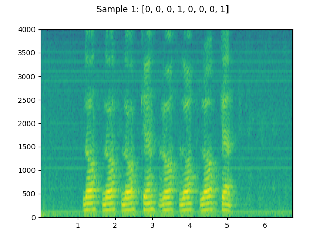
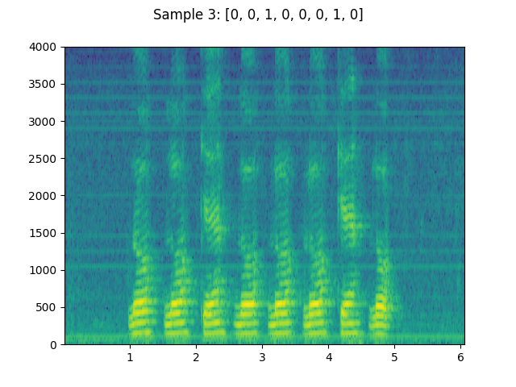
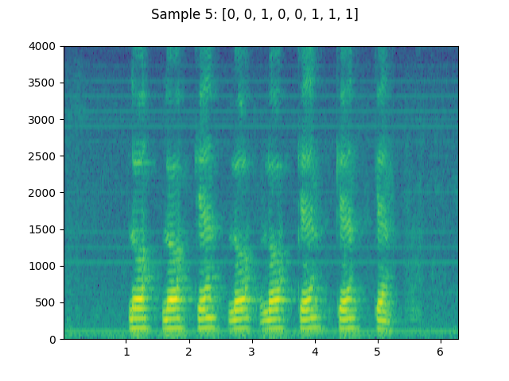

Note
Click here to download the full example code
Audio Datasets¶
torchaudio provides easy access to common, publicly accessible
datasets. Please refer to the official documentation for the list of
available datasets.
# When running this tutorial in Google Colab, install the required packages
# with the following.
# !pip install torchaudio
import torch
import torchaudio
print(torch.__version__)
print(torchaudio.__version__)
1.13.0+cu117
0.13.0+cu117
Preparing data and utility functions (skip this section)¶
# @title Prepare data and utility functions. {display-mode: "form"}
# @markdown
# @markdown You do not need to look into this cell.
# @markdown Just execute once and you are good to go.
# -------------------------------------------------------------------------------
# Preparation of data and helper functions.
# -------------------------------------------------------------------------------
import multiprocessing
import os
import matplotlib.pyplot as plt
from IPython.display import Audio, display
_SAMPLE_DIR = "_assets"
YESNO_DATASET_PATH = os.path.join(_SAMPLE_DIR, "yes_no")
os.makedirs(YESNO_DATASET_PATH, exist_ok=True)
def plot_specgram(waveform, sample_rate, title="Spectrogram", xlim=None):
waveform = waveform.numpy()
num_channels, num_frames = waveform.shape
figure, axes = plt.subplots(num_channels, 1)
if num_channels == 1:
axes = [axes]
for c in range(num_channels):
axes[c].specgram(waveform[c], Fs=sample_rate)
if num_channels > 1:
axes[c].set_ylabel(f"Channel {c+1}")
if xlim:
axes[c].set_xlim(xlim)
figure.suptitle(title)
plt.show(block=False)
def play_audio(waveform, sample_rate):
waveform = waveform.numpy()
num_channels, num_frames = waveform.shape
if num_channels == 1:
display(Audio(waveform[0], rate=sample_rate))
elif num_channels == 2:
display(Audio((waveform[0], waveform[1]), rate=sample_rate))
else:
raise ValueError("Waveform with more than 2 channels are not supported.")
Here, we show how to use the
torchaudio.datasets.YESNO() dataset.
- 
- 
- 
0%| | 0.00/4.49M [00:00<?, ?B/s]
0%| | 8.00k/4.49M [00:00<01:00, 77.2kB/s]
1%| | 32.0k/4.49M [00:00<00:28, 164kB/s]
2%|2 | 96.0k/4.49M [00:00<00:12, 362kB/s]
4%|3 | 176k/4.49M [00:00<00:08, 513kB/s]
8%|8 | 368k/4.49M [00:00<00:04, 973kB/s]
17%|#6 | 760k/4.49M [00:00<00:02, 1.88MB/s]
34%|###3 | 1.51M/4.49M [00:00<00:00, 3.65MB/s]
67%|######7 | 3.02M/4.49M [00:00<00:00, 7.08MB/s]
100%|##########| 4.49M/4.49M [00:00<00:00, 5.28MB/s]
<IPython.lib.display.Audio object>
<IPython.lib.display.Audio object>
<IPython.lib.display.Audio object>
Total running time of the script: ( 0 minutes 2.341 seconds)